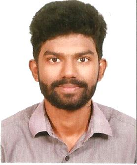

| 
Email: robincherianmathew@gmail.com
Phone: +91 8089198397
Github: github.com/robin1221?tab=repositories
Linkedin: linkedin.com/in/robin-cherian-mathew-9baa3b19b/
|
ROBIN CHERIAN MATHEW
Programmer
“Programmer with excellent problem solving skills and ability to perform
well in a team. Passionate about coding and doing it in a unique way. ”
|
| TECHNICAL SKILLS |
EDUCATION |
|
- Programming Languages : Python , Java, C++, C, Linux
- Databases : MySQL , sqlite
- Web Technologies : HTML , CSS, Bootstrap
- Frameworks : Django(Python)
|
| Course |
Institution |
Year |
Marks/Percentage |
| MCA |
Marian College Kuttikanam |
2020-Present |
|
| BCA |
CMS College Kottayam |
2017-2020 |
7.18 CCPA |
| +2 |
Girideepam Bethany Higher Secondary School, Kalathipady |
2015-2017 |
70 % |
|
| AWARDS/CERTIFICATIONS |
ACADEMIC PROJECTS |
|
- Red Hat Training Certificate(IPSR Solutions).
- Cpp training Certificate (IIT Bombay).
- C training Certificate (IIT Bombay).
- Course Completion Certificate
for “Python For Data Science”
(IBM Cognitiveclass.ai).
- NCC ‘C’ Certificate.
- Youth Festival Certificate(2nd)
- Grade 5 Certificate for Music Theory (Trinity College of London).
- Grade 6 Certificate for Vocal Singing (Trinity College of London).
|
| Project title |
Technologies used |
Description |
| CMS EVENT(Mini Project): |
PHP, HTML, CSS,JS ,BOOTSTRAP, SQL. |
Online event booking web application for CMS College, Kottayam. |
| Hospital Management System(Main Project): |
Python Tkinter, Sqlite. |
Desktop application for managing all activities in the hospital. |
| NATURE STORE(Mini Project): |
Python Django, Sqlite. |
Eco-friendly product trading platform. |
| MUSIC SCORE READER |
Python Cv2 |
It read the image of western music sheet and convert it into audio file. |
|
| LEADERSHIP |
ACHIEVEMENTS |
|
- NCC Cadet in CMS College Kottayam (C Certificate Holder)
- Worked as a Special Police
Officer in Lok Sabha Election
2019 and Panchayath Election 2020.
- C training Certificate (IIT Bombay).
- Course Completion Certificate
for “Python For Data Science”
(IBM Cognitiveclass.ai).
- Attended the Republic Day Training Camp (IBC) 2018
|
- Completed C and Cpp tests organized at CMS College Kottayam with
course material provided by the Spoken tutorial Project, IIT Bombay.
- Completed Red Hat course conducted by IPSR Solutions.
- Completed Python for Data Science course provided by Cognitive.ai
- 2nd Position in Western Group Song for MG University Youth Festival
(Alathaalam-2019).
- 6th Grade holder for Vocal Singing and Music Theory Examination, Trinity College London.
|